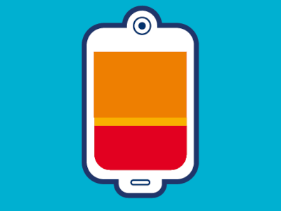

Le sang et ses composants
Respiration, nutrition, défense, régulation… Le sang joue un rôle essentiel dans de nombreuses fonctions vitales. L’ensemble de ses composants est indispensable à notre bonne santé ! Qu’est-ce que le sang, à quoi sert-il et de quoi est-il composé ? Si vous vous posez la question, vous êtes au bon endroit !
Lire la suite...